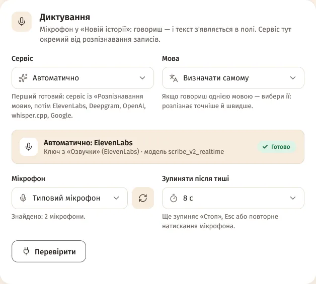
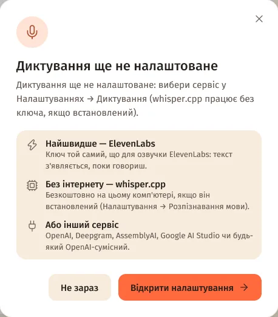
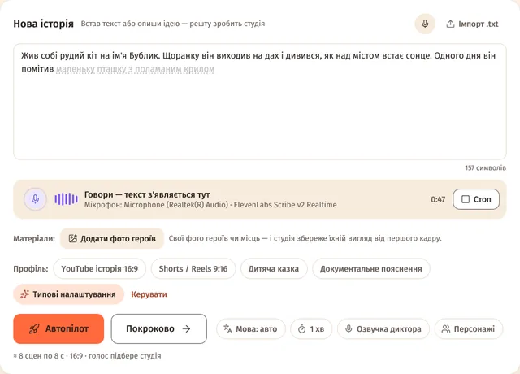

Налаштування за хвилину
- Налаштування → Підключення → «Диктування». Натиснеш мікрофон без налаштувань — студія сама запропонує «Відкрити налаштування».
- «Сервіс» — «Автоматично» (перший готовий) або конкретний сервіс. Найшвидше — ElevenLabs: ключ той самий, що для озвучки.
- «Мова» — «Визначати самому» або вибери свою: так точніше й швидше.
- «Мікрофон» і «Зупиняти після тиші» — типово 8 с; можна 3 с … 1 хв або «Не зупиняти».
- «Перевірити» — перевіряє ключ і зв'язок, нічого не записуючи.


Як диктувати
- Головна → «Нова історія» → кнопка мікрофона в шапці картки.
- Говори. Під полем — «Говори — текст з'являється тут», рівень звуку й час. Текст стає там, де курсор; ще не підтверджені слова — бліді, з пунктиром.
- Стоп — ще раз мікрофон, «Стоп» або Esc. Ще диктування зупиняється після тиші, через 15 хвилин і коли перемикаєшся в інше вікно. Сказане вже в полі.

Сервіси й мови
| Сервіс | Як працює | Ключ |
|---|---|---|
| ElevenLabs Scribe v2 Realtime | у реальному часі | ключ озвучки ElevenLabs або свій |
| OpenAI Realtime (GPT Live Transcribe) | у реальному часі | свій або з «Розпізнавання мови», «Текст» чи озвучки (ключ api.openai.com) |
| Deepgram Nova-3 | у реальному часі | свій ключ Deepgram |
| AssemblyAI Universal-Streaming | у реальному часі | з «Розпізнавання мови» або свій |
| OpenAI-сумісний сервіс (фразами) | фразами | адреса й ключ з «Розпізнавання мови» чи «Текст» |
| Google AI Studio (Gemini, фразами) | фразами | ключі Google AI Studio (чергуються) |
| whisper.cpp на цьому комп'ютері | фразами, без інтернету | не потрібен — встанови в «Розпізнавання мови» → «Локально» |
- «Автоматично» бере перший готовий: сервіс із «Розпізнавання мови», потім ElevenLabs, Deepgram, OpenAI, whisper.cpp, Google.
- Українська: AssemblyAI у реальному часі її поки не розпізнає. Deepgram сам визначає лише 10 мов, без української, — вибери її в «Мова». Для сервісів на Whisper теж вибери мову: на коротких фразах він інколи плутає українську з російською.
- «Фразами» означає: текст з'являється після кожної паузи. whisper.cpp показує проміжний текст, лише якщо поруч є whisper-server.
Дозвіл на мікрофон
- Мікрофон слухає FFmpeg — він має бути встановлений (Налаштування → FFmpeg → «Встановити автоматично»).
- Windows: Параметри → Конфіденційність → Мікрофон → доступ для класичних програм.
- macOS: під час першого натискання система спитає дозвіл. Відмовив — Системні параметри → Конфіденційність і безпека → Мікрофон.
Питання
Чи записується мій голос?
Студія нікуди не зберігає запис: звук іде лише до вибраного сервісу розпізнавання, а з whisper.cpp — взагалі не залишає комп'ютер.
Мікрофон «нічого не почув»
Перевір, чи мікрофон увімкнений і вибраний у Налаштування → «Диктування» → «Мікрофон» (кнопка поруч оновлює список). Якщо студія пише «Мікрофон мовчить», він вимкнений у системі.
Це те саме, що «Розпізнавання мови»?
Ні. «Розпізнавання мови» — для готових записів у «Своїй озвучці», «Диктування» — для мікрофона. Але ключі першого диктування може брати само.